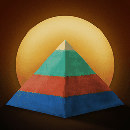
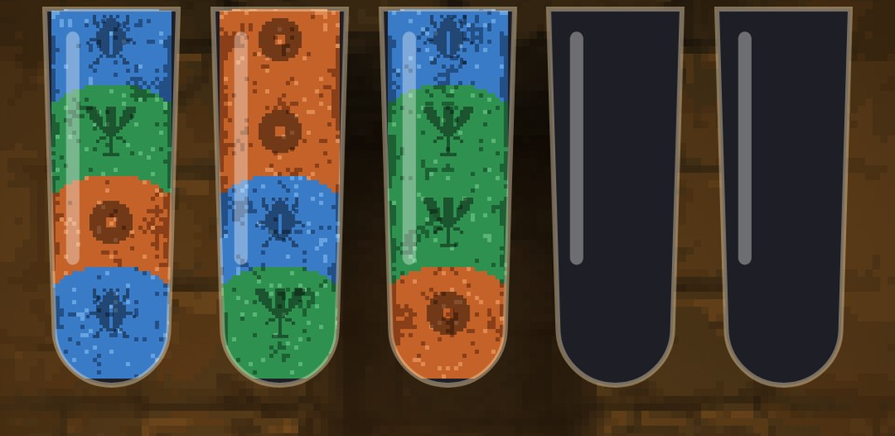

Screens
Cinematic pixel art, drawn for this game. Ninety rooms, lit by torches, braziers and shafts of daylight.



Pour the sands of Egypt until every pigment rests in a vessel of its own.
A thousand chambers in ten chapters. No lives, no energy, no timers, no move limits, and no way to lose. Undo and restart are free and unlimited, for everyone, forever.

Sand settles only on sand of the same colour, and only where there is room for it. That is the whole of it.
Every chamber hands you vessels of layered coloured sand, jumbled. Tip one into another and the top band pours across, as much of it as will fit. Gather every pigment into a vessel of its own and the chamber is done: the glass breaks, the colours rise in a turning column of dust, and the stone door opens on the next room.
The first hundred chambers teach twelve ideas, one at a time, with no tutorial cards and nothing to read. The nine hundred after them mix those ideas, ten chapters deep, through the Shifting Antechamber, the Painted Corridor, the Hall of Pigments, the Sealed Vault, the Chamber of the Two Truths, the Sealed Door, the Serpent Passage, the Weighing Hall, the Lake of Fire, and the House of Gold.
This game exists because sorting puzzles stopped being fair. You pay twelve dollars to remove the adverts and they still charge you for the undo button.
So here is all of it, in one place, before you install anything. There are two purchases in this game, each of them once and forever, and beside every one of them there is a free way to the same thing. Nothing here is rationed to make you pay, and nothing is sold twice.
Hints and the extra vial come three at a time. When the last one is spent, one comes back for nothing after a minute, or at once for an advert you choose to watch, or you can buy them unlimited. The screen says all three, every time, and the waiting one is never hidden.
Adverts appear between chambers only, never over a puzzle, and never in the first eighteen chambers.
Each is a puzzle of its own. It arrives on a chamber that teaches it, is practised, and then joins the mix for good.
An amphora that takes one layer per pour, however much you tip into it.
A stone grille over the mouth. Sand runs out of it; nothing goes in.
Sealed until its pigment is gathered somewhere else on the board. What it was hiding is then yours to deal with.
Lined with pitch. It lets go of one layer at a time, and no more.
Vessels of different heights on one board, so room is no longer the same everywhere.
Buried under Nile silt. You cannot see what is under it until you move it.
A water clock. It pours from the bottom, so the layer you get is the one you have been ignoring.
Opens on a number, not a colour. Gather enough and the wax lifts.
A named order of layers. Build the name exactly and the seal breaks.
The board is two halves. Every pour you make in one is made again in the other, if it is legal there.
A charged gate that pulls the iron-red out of a compound pigment, splitting purple back into carnelian and lapis. It is only awake while its coil is full, so you decide when it fires.
Fires two pigments into a third. Malachite and natron become Egyptian blue, the way they actually did.
Cinematic pixel art, drawn for this game. Ninety rooms, lit by torches, braziers and shafts of daylight.
The colours are the ones Egyptian painters actually ground, and each one carries a note about where it came from.
Each pigment carries its own hieroglyph, stamped on every band of sand, so the board reads by shape as well as by colour. Nobody has to lose because of what their eyes make of red and green.
The dust from a finished chamber is a real fluid simulation. Put a finger in it and it moves out of the way.
One playlist for the whole game, crossfading song to song. Finishing a chamber does not interrupt the music, because being interrupted is the opposite of the point.
Every chamber is checked by a solver before it ships. Nothing is impossible, every hint is a real move, and wrong moves are real too. Some chambers have exactly one solution.
Three stars for a tidy solution, and never a punishment for a long one. Finishing is finishing.
No account, no sign-in, no server, no analytics of ours. Your progress lives on your device and nowhere else.
Every word in the game, in every one of them, with the right script face for each. More are planned.
The short answers. The full support page has these in every language the game speaks.
Colored Sands of Egypt is made in British Columbia, Canada, by Major Computing, which is one developer who got tired of being nickel-and-dimed by sorting games.
Anything at all — a bug, a chamber that felt unfair, a translation that reads oddly, a question about any of the above — goes to admin@majorcomputing.ca, and a person reads it.